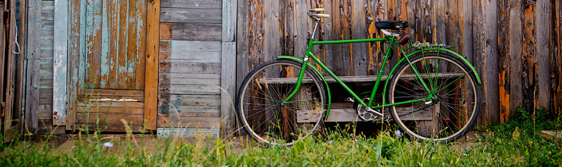

“Pedalar sempre foi a minha paixão, o que o pessoal da Bikcraft fez foi intensificar o meu amor por esta atividade. Recomendo à todos que amo.”
Barbara Moss
“Nada melhor do que dar um rolê com a minha Bikcraft na orla. Essa é a minha companheira mais fiel, nunca me traiu e está sempre a minha disposição.”
Jhony Rato
“Aqueles que ainda não possuem uma Bikcraft, não sabem o que estão perdendo. A precisão é absurda e a velocidade transcendental. Nunca vida nada igual.”
Bernardo

“o verdadeiro segredo da felicidade está em ter um genuíno interesse por todos os detalhes da vida cotidiana.”